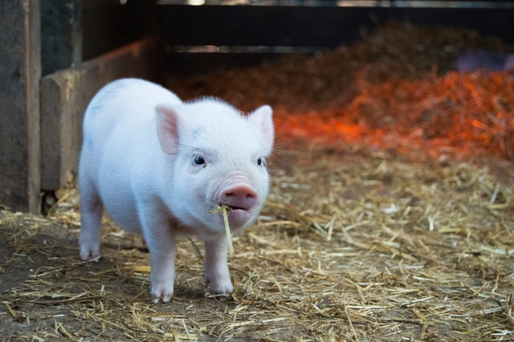

Welcome to my vegan recipe site! Green As You Go is all about helping you to integrate plant based foods into your diet.

Below I have included a selection of some of my favourite vegan recipes, which I hope you enjoy!